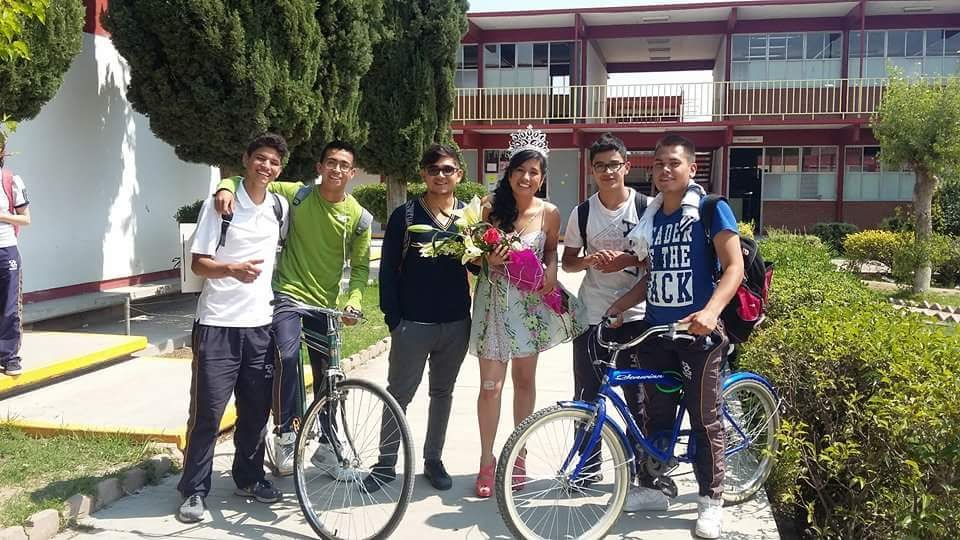

Durante la preparatoria fue cuando tome la decisión de que es lo que realmente quería estudia ya que es donde comenzaría a prepararme ya un poco más profesionalmente, escogí una carrera relacionada con tecnologías con las computadoras la cual fue “Soporte y mantenimiento en equipos de cómputo”, es estos tiempos conocí nuevas amistades, al principio no eran las mejores amistades pero pasaba buenos ratos con ellos sin importar que en la escuela no fuera de lo mejor, cuando me percate de esta situación fue cuando decidí conseguir nuevas amistades y fue cuando conocí a dos grandes amigos los cuales me ayudaron en la escuela pero también compartimos muchos momentos de relajo y diversión, ellos me enseñaron que hay tiempo para tos, pero que primero están las responsabilidades y despues momentos de desestres.
 Inicio